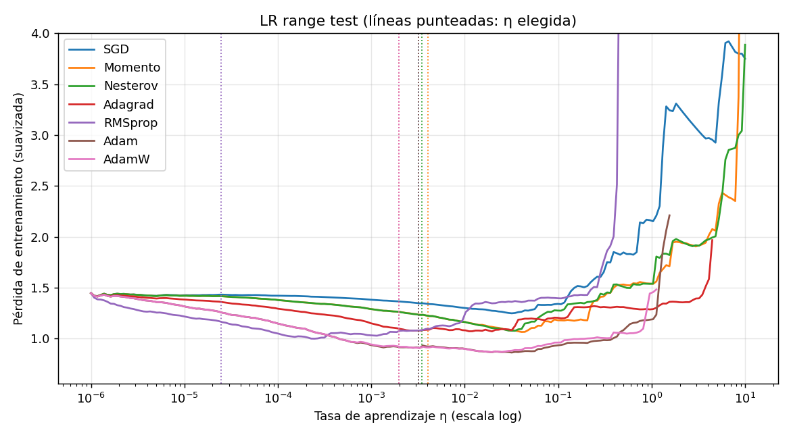
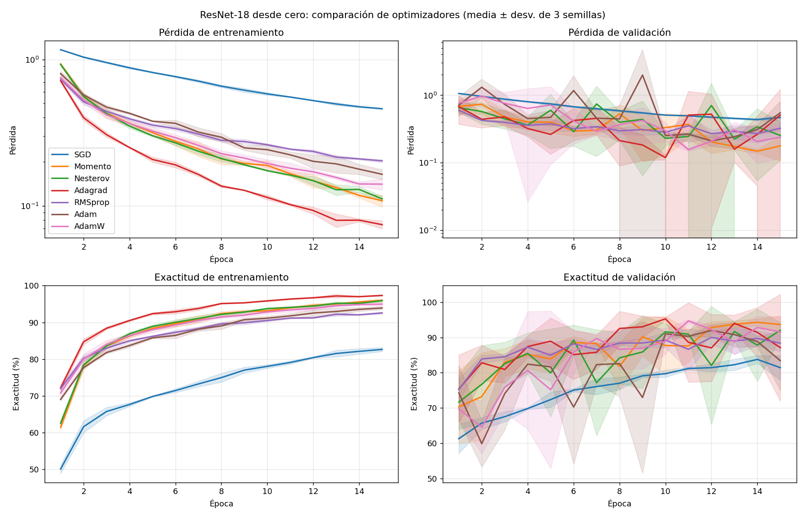
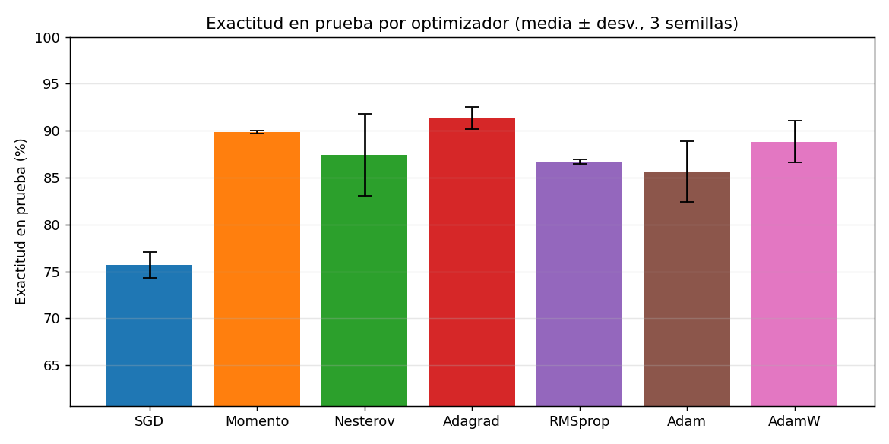

Estudio comparativo de algoritmos de optimización para el entrenamiento de redes neuronales convolucionales en la clasificación de tumores cerebrales en MRI
Proyecto final – MEMAD · Entrega II
Alumno: Gabriel Monteagudo · Código: 326056195
CUCEI, Universidad de Guadalajara
Fecha de entrega: 16 de noviembre de 2026
1. Objetivo de la semana
Comparar los siete optimizadores implementados y validados en la semana I (SGD, momento,
Nesterov, Adagrad, RMSprop, Adam y AdamW) entrenando la misma red convolucional desde cero,
sin pesos preentrenados, bajo un protocolo común. Sin preentrenamiento todo el trabajo de ajuste
recae en el optimizador, así que las diferencias entre algoritmos son más visibles que con
transfer learning.
2. Protocolo experimental
Elemento
Valor
Red
ResNet-18 sin preentrenar (11.17 M parámetros), entrada de 1 canal (escala de grises)
Imágenes
128 × 128, normalizadas con la media y desviación del conjunto de entrenamiento
Partición
La misma de la semana I: 4 760 entrenamiento / 840 validación / 1 600 prueba
Aumento de datos
Volteo horizontal y desplazamiento aleatorio de ±8 píxeles
Función de pérdida
Entropía cruzada
Presupuesto
15 épocas, lotes de 64, tasa de aprendizaje constante (sin programación)
Hiperparámetros
Momento y Nesterov con μ = 0.9; Adam y AdamW con β = (0.9, 0.999); AdamW con weight decay desacoplado de 10⁻²; el resto sin weight decay
Tasa de aprendizaje
Elegida por separado para cada optimizador con el LR range test (sección 3)
Repeticiones
3 semillas por optimizador (21 entrenamientos, 315 épocas, 11.6 min de entrenamiento en GPU)
Selección del modelo
Mejor época según validación; el conjunto de prueba se evalúa una sola vez, con ese modelo
Se usaron nuestras implementaciones de los optimizadores (archivo optimizadores.py de la semana I, sin cambios).
3. Selección de la tasa de aprendizaje: LR range test
Cada optimizador requiere una escala de tasa de aprendizaje distinta, de modo que usar la misma η
para todos sería injusto. Siguiendo a Smith (2017), se entrenaron 200 iteraciones aumentando η
exponencialmente de 10⁻⁶ a 10 y se registró la pérdida suavizada. Se tomó ηmín como la tasa
con la menor pérdida y se eligió η = ηmín / 10, un orden de magnitud por debajo de la
zona donde el entrenamiento empieza a volverse inestable.

Figura 1. LR range test: pérdida de entrenamiento suavizada en función de η. Las líneas punteadas marcan la η elegida.
Optimizador
ηmín (menor pérdida)
η elegida = ηmín/10
Observación de la curva
SGD
3.2 × 10⁻²
3.2 × 10⁻³
La pérdida apenas baja hasta η ≈ 10⁻²; diverge cerca de η ≈ 1.
Momento
4.1 × 10⁻²
4.1 × 10⁻³
Similar a Nesterov.
Nesterov
3.4 × 10⁻²
3.4 × 10⁻³
Similar al momento clásico.
Adagrad
2.0 × 10⁻²
2.0 × 10⁻³
Es el que tolera las tasas más altas (estable hasta η ≈ 3).
RMSprop
2.5 × 10⁻⁴
2.5 × 10⁻⁵
El primero en volverse inestable (η ≈ 10⁻³) y en diverger (η ≈ 0.4).
Adam
3.2 × 10⁻²
3.2 × 10⁻³
Las pérdidas más bajas en el rango 10⁻³–10⁻¹, junto con AdamW.
AdamW
2.0 × 10⁻²
2.0 × 10⁻³
Prácticamente igual que Adam.
4. Resultados
4.1 Curvas de aprendizaje

Figura 2. Pérdida y exactitud de entrenamiento y validación por época (media de 3 semillas; banda: ± una desviación estándar). Pérdidas en escala logarítmica.
4.2 Tabla de resultados
Optimizador
η
Mejor val. acc. (%)
Test acc. (%)
Pérdida train final
Época en que val ≥ 90 %
Tiempo / época (s)
Divergencias
SGD
3.2e-3
84.13 ± 1.47
75.67 ± 1.39
0.460 ± 0.003
no alcanza
2.0
0/3
Momento
4.1e-3
95.28 ± 0.84
89.85 ± 0.18
0.108 ± 0.010
8.3 ± 2.1
2.1
0/3
Nesterov
3.4e-3
93.77 ± 1.82
87.44 ± 4.39
0.111 ± 0.005
6.7 ± 1.2
2.2
0/3
Adagrad
2.0e-3
95.91 ± 0.60
91.35 ± 1.17
0.074 ± 0.005
5.3 ± 1.5
2.1
0/3
RMSprop
2.5e-5
91.47 ± 1.11
86.69 ± 0.22
0.203 ± 0.005
10.3 ± 0.6
2.2
0/3
Adam
3.2e-3
92.90 ± 1.85
85.62 ± 3.22
0.164 ± 0.013
9.3 ± 1.2
2.4
0/3
AdamW
2.0e-3
94.72 ± 0.38
88.83 ± 2.25
0.141 ± 0.013
7.7 ± 3.5
2.5
0/3
Media ± desviación estándar de 3 semillas. "Época en que val ≥ 90 %": primera época en que la exactitud de validación llega al 90 % (velocidad de convergencia). Tiempo por época: solo entrenamiento.

Figura 3. Exactitud en prueba por optimizador (media ± desviación estándar, 3 semillas).
5. Análisis
SGD sin momento es claramente el peor (75.7 % en prueba). Su pérdida de entrenamiento
sigue bajando de forma casi lineal al final de las 15 épocas (0.46, frente a 0.07–0.20 del resto),
así que el problema es de velocidad de convergencia, no de capacidad de la red.
El momento multiplica el paso efectivo. En régimen estacionario, el término de velocidad
del momento acumula v ≈ g / (1 − μ), así que el paso efectivo es η / (1 − μ) = 10 η para μ = 0.9.
Con η parecidas (3.2 × 10⁻³ y 4.1 × 10⁻³), el momento avanza unas 13 veces más por iteración que
SGD. Esto explica buena parte de la diferencia de 14 puntos entre ambos.
vt = μ vt−1 + g ⇒ v∞ = g / (1 − μ) ⇒ paso efectivo = η / (1 − μ)
Adagrad obtuvo el mejor resultado: 91.35 ± 1.17 % en prueba, la menor pérdida de
entrenamiento y la convergencia más rápida (90 % de validación en 5.3 épocas). Una posible
explicación es que su acumulador G solo crece, de modo que su paso efectivo η / √G es grande al
principio y luego disminuye solo. Es el único algoritmo del estudio con un decaimiento
implícito de la tasa de aprendizaje, en un protocolo donde η es constante. Es una hipótesis que
queda por comprobar.
Momento es el más estable entre semillas (89.85 ± 0.18 %). Nesterov y Adam muestran la
mayor variabilidad (± 4.4 y ± 3.2 puntos): en cada uno, una de las tres semillas cayó a ≈ 82 %.
La validación oscila mucho de una época a otra (figura 2, panel inferior derecho). Con
tasa de aprendizaje constante, el optimizador no "se asienta" en el mínimo: por ejemplo, la exactitud
de validación de Adagrad en la última época fue 87.1 ± 15.1 %, frente al 95.9 % de su mejor época.
Elegir la mejor época por validación es, por tanto, esencial, y esto motiva el estudio de la
programación de la tasa de aprendizaje previsto para la semana IV.
El costo por iteración es similar. Todos tardan entre 2.0 y 2.5 s por época. Adam y AdamW
son un 20–25 % más lentos que SGD porque mantienen y actualizan dos vectores de estado (m y v) por
parámetro.
Diferencia entre validación y prueba. La exactitud en prueba queda entre 4.6 y 8.5 puntos
por debajo de la mejor validación. Contribuyen dos efectos: elegir la mejor de 15 épocas sobre solo
840 imágenes da una estimación optimista, y la diferencia de distribución entre las carpetas
Training y Testing ya observada en la semana I.
Limitaciones
Con 3 semillas, las diferencias dentro del grupo de cabeza no son concluyentes. Adagrad,
Momento y AdamW (88.8–91.4 %) están separados por menos de 2.5 puntos, una diferencia comparable a la
variabilidad entre semillas de varios optimizadores. Con 3 semillas no es posible ordenarlos con
confianza. La única conclusión robusta es que SGD sin momento queda por debajo del resto en este protocolo.
La regla η = ηmín/10 es conservadora, y su efecto no es igual para todos. Para
SGD el resultado podría deberse en parte a una η demasiado pequeña. Una comprobación pendiente es
repetir SGD con η cercana a ηmín (3 × 10⁻²).
Adam y AdamW se entrenaron con η distintas (3.2 × 10⁻³ y 2.0 × 10⁻³), así que su diferencia
no puede atribuirse solo al weight decay desacoplado.
Con 15 épocas, a 128 × 128 y sin preentrenar, la mejor red (91.4 %) queda por debajo del modelo
de referencia ResNet-50 preentrenado de la semana I (96.0 %). La comparación es solo orientativa,
porque cambian la arquitectura, la resolución y el presupuesto.
6. Conclusión y siguientes pasos
Entrenando desde cero, el optimizador marca diferencias grandes: 15.7 puntos en prueba entre el
mejor (Adagrad, 91.4 %) y el peor (SGD, 75.7 %). Los métodos con momento o con paso adaptativo superan
claramente a SGD sin momento, y el análisis del paso efectivo del momento explica buena parte de esa
diferencia. Dentro del grupo de cabeza, las diferencias son del orden de la variabilidad entre semillas.
Semana III: caso convexo (regresión logística sobre características extraídas), comparando
descenso de gradiente, gradiente conjugado, Newton y L-BFGS con sus tasas de convergencia teóricas.
Semana IV: programación de la tasa de aprendizaje (escalonada, coseno, OneCycle), para
reducir las oscilaciones observadas en validación, y optimización de hiperparámetros.
Referencias
Smith, L. N. (2017). Cyclical Learning Rates for Training Neural Networks. WACV. arXiv:1506.01186.
He, K., Zhang, X., Ren, S. & Sun, J. (2016). Deep Residual Learning for Image Recognition. CVPR. arXiv:1512.03385.
Sutskever, I., Martens, J., Dahl, G. & Hinton, G. (2013). On the importance of initialization and momentum in deep learning. ICML.
Duchi, J., Hazan, E. & Singer, Y. (2011). Adaptive Subgradient Methods for Online Learning and Stochastic Optimization. JMLR 12.
Kingma, D. P. & Ba, J. (2015). Adam: A Method for Stochastic Optimization. ICLR. arXiv:1412.6980.
Loshchilov, I. & Hutter, F. (2019). Decoupled Weight Decay Regularization. ICLR. arXiv:1711.05101.